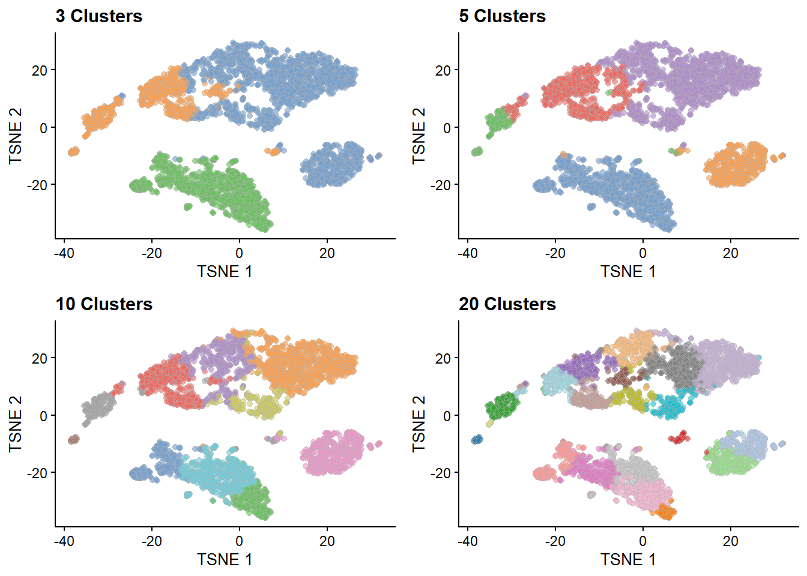
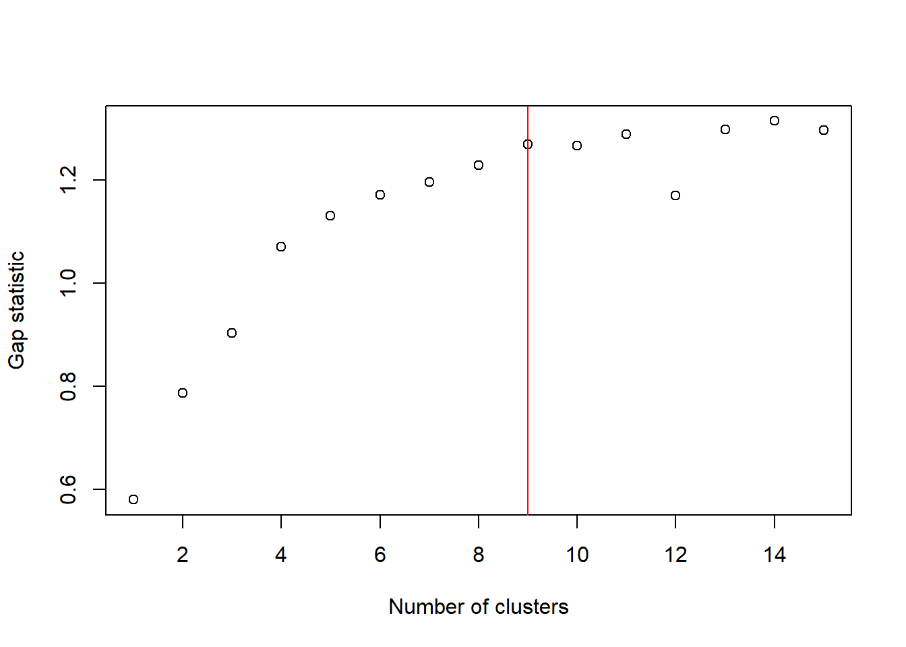
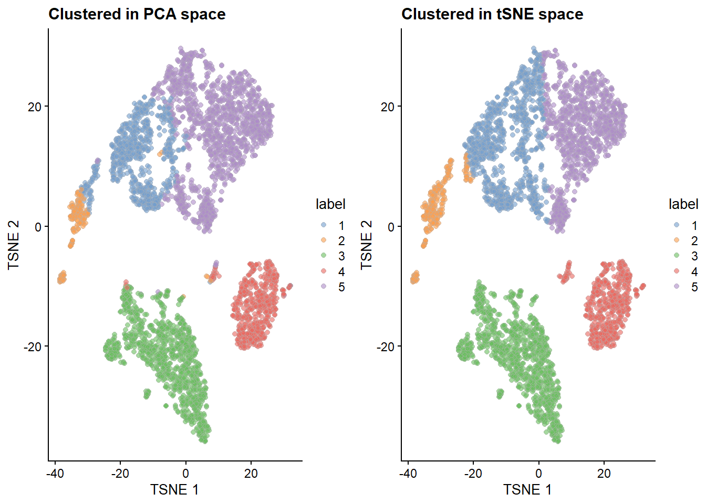
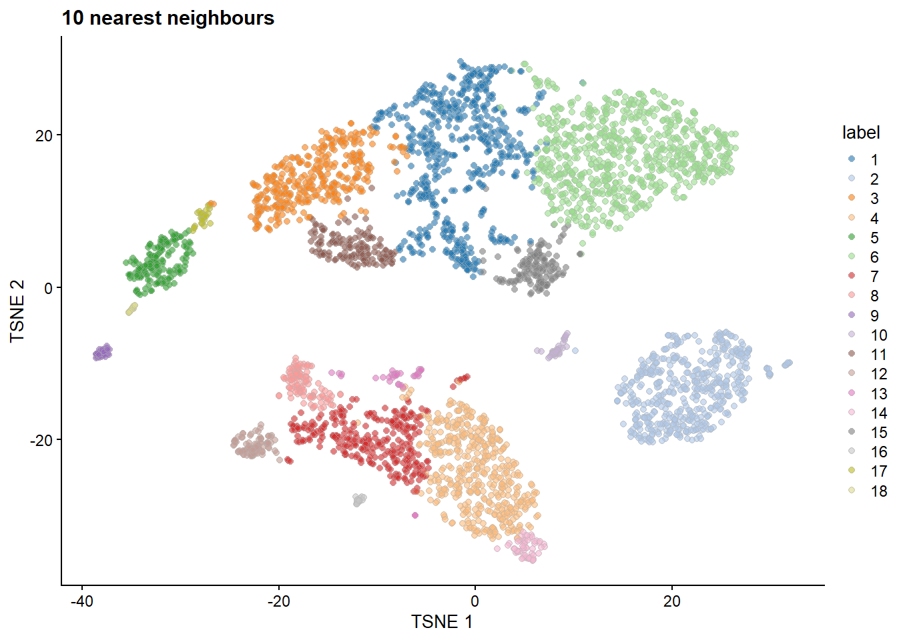
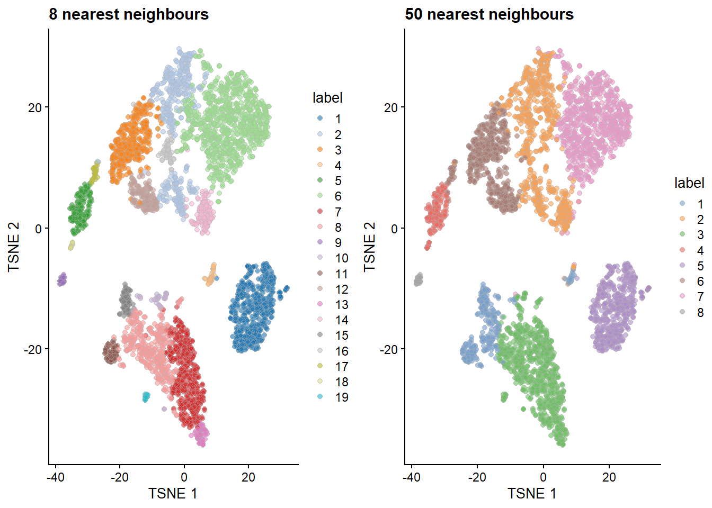
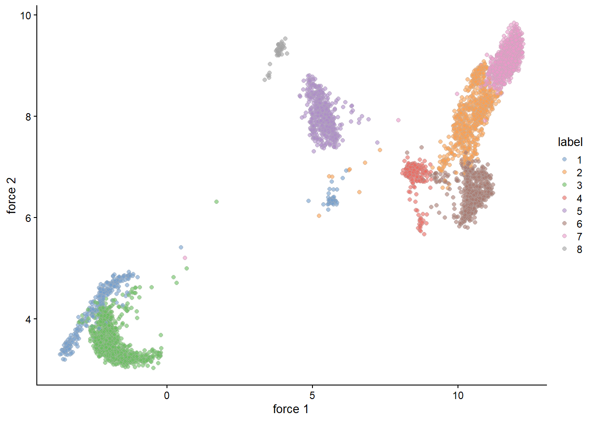

Chapter 7 Exploring clustering
Large sections of this document are adapted from Orchestrating Singe-Cell Analysis.
7.1 Load Data
We will use the peripheral blood mononuclear cell (PBMC) dataset from 10X Genomics (Zheng et al. 2017).
For simplicity we will load the data as a SingleCellExperiment object from a saved .rds file. This data has already had some basic QC, normalisation, and dimensionality reduction applied.
7.2 Clustering
The most important thing to remember about clustering is that by choosing the right algorithm and representation of our data we can get any groupings we please. Clustering is just one of many tools we have to explore data and the perspectives it offers are only as reasonable as the choices and assumptions that underlie them.
7.3 k-means
There are many good explanations and visualisations of how the k-means algorithm works online so I won’t go into much detail here. The objective of the algorithm is to assign each point to a cluster in such a way that minimizes the sum of the squared distances between each point and the average position of all of the points which are assigned to its cluster.
set.seed(100)
clust.kmeans <- kmeans(reducedDim(sce.pbmc, "PCA"), centers=10)
colLabels(sce.pbmc) <- factor(clust.kmeans$cluster)
plotReducedDim(sce.pbmc, "TSNE", colour_by="label") +
ggtitle("k-mean Clustering")Figure 7.1: t-SNE plot of the PBMC dataset, where each point represents a cell and is coloured according to the identity of the assigned cluster from k-means clustering.
7.3.1 Choosing k
The key parameter in k-means clustering is choice of the number of clusters, k. By varying this parameter we can move from coarse-grained to more fine-grained clusters.

One use of k-means is to deliberately set k to a large value to “overcluster” the data. k-means will happily split up large clusters which graph-based methods try to keep intact, by examining how clusters divide into subclusters can provide some insight on the internal structure of these groups of cells. This is a nice example of the philosophy of using clustering as a tool to interrogate data, rather than a method for ‘objectively’ discovering populations of cells.
7.3.1.1 How do we choose a reasonable k?
We can measure how well our clusters fit the variation in the data and use this to inform our choice of a suitable k. One such measure is the gap statistic which is the log-ratio of the expected to observed within-cluster sum of squares. Larger values of the statistic indicate that the chosen number of clusters has better captured the variation present in the data. Often instead of choosing the k with the largest gap statistic we will choose the lowest k with a statistic within some threshold of the best statistic we observe.
library(cluster)
set.seed(110010101)
gaps <- clusGap(reducedDim(sce.pbmc, "PCA"), kmeans, K.max=15)
# Choose the smallest k for which the gap statistic is within 1 SE of the best k.
best.k <- maxSE(gaps$Tab[,"gap"], gaps$Tab[,"SE.sim"])
plot(gaps$Tab[,"gap"], xlab="Number of clusters", ylab="Gap statistic")
abline(v=best.k, col="red") Gap statistic with respect to increasing number of k-means clusters in the PBMC dataset. The red line represents the chosen k.
7.3.2 Which subspace?
The k-means algorithm uses the distance between points to cluster them. which the distances between points and centers. However these distances depend on the space in which our points are lying, so which space should we choose?
We might choose the ‘full-space’ in which each dimension corresponds to the expression of a different gene. In the case of the pbmc data we have ~30,000 dimensions in our data. It can be quite computationally expensive to work in this full space. Instead we could perform on the data in a reduced dimensionality space such as PCA, \(t\)-SNE, or UMAP. Very low dimensional representations of the data such as 2D \(t\)-SNE or UMAP cannot include much of the true variation that exists in the data, if we clustered on them directly we would miss important structure in the data. Therefore usually a compromise is made and clustering is performed on the data in the subspace formed by the first 50-100 PCs from PCA, this hopefully has sufficiently many dimensions to contain most of the important structure in the data while not being too computationally expensive to work with. Furthermore by only using the top PCs we denoise the data by discarding less informative variation.
After clustering in this higher dimensional space we use the lower dimension \(t\)-SNE or UMAP to plot the results.
Below we can see the difference between clustering in PCA space vs directly on the two \(t\)-SNE dimensions. Note how the mixing of cells with different labels in the PCA space plot contrasts with the clean cluster boundaries from \(t\)-SNE clustering.

7.4 Graph-based clustering
Graph-based clustering is an increasingly popular family of clustering methods. Instead of directly clustering cells based on their position in a gene expression space these methods use the expression data to build a nearest-neighbours graph and subsequently cluster cells based on the structure of this graph. The graph is constructed by linking each cell to its \(k\) nearest neighbours, often weighting the edges by how similar the cells are. This process has better computational scaling than many global methods such as k-means or hierarchical clustering.
g <- buildSNNGraph(sce.pbmc, k=10, use.dimred = 'PCA')
clust <- igraph::cluster_walktrap(g)$membership
colLabels(sce.pbmc) <- factor(clust)
plotReducedDim(sce.pbmc, "TSNE", colour_by="label") +
ggtitle("10 nearest neighbours")
There are several important choices to be made when implementing a graph-based clustering method:
- How many neighbors are considered when constructing the graph.
- How to weight the edges between connected cells.
- Once we have the graph which algorithm do we use to detect ‘communities’.
For example choosing a lower value of \(k\), the number of nearest neighbours to consider when building the graph, tends to produce ‘higher resolution’ clustering, with more clusters detected than if a higher value of \(k\) were chosen. As with k-means clustering there is no ‘right answer’ and it is best to use experiment with this parameter to investigate how it effects your results.

7.4.1 Force-directed layout
We can directly visualise the underlying graph using a force-directed layout, this effectively provides another dimensionality reduction visualistion alongside \(t\)-SNE and UMAP.
set.seed(2000)
reducedDim(sce.pbmc, "force") <- igraph::layout_with_fr(g)
plotReducedDim(sce.pbmc, colour_by="label", dimred="force")
7.5 Bibliography
Zheng, G. X., J. M. Terry, P. Belgrader, P. Ryvkin, Z. W. Bent, R. Wilson, S. B. Ziraldo, et al. 2017. “Massively parallel digital transcriptional profiling of single cells.” Nat Commun 8 (January): 14049.